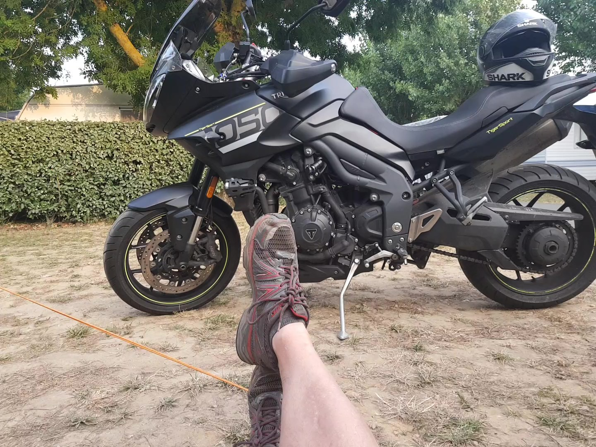
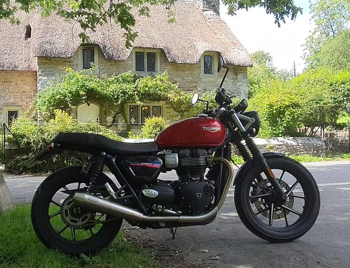
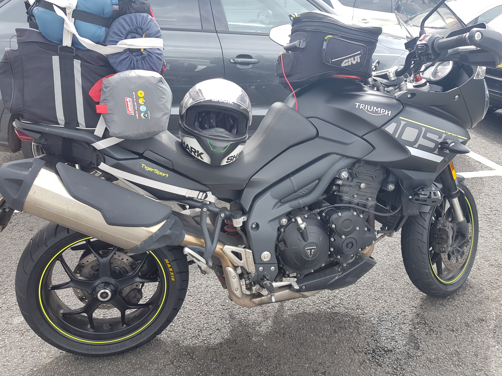
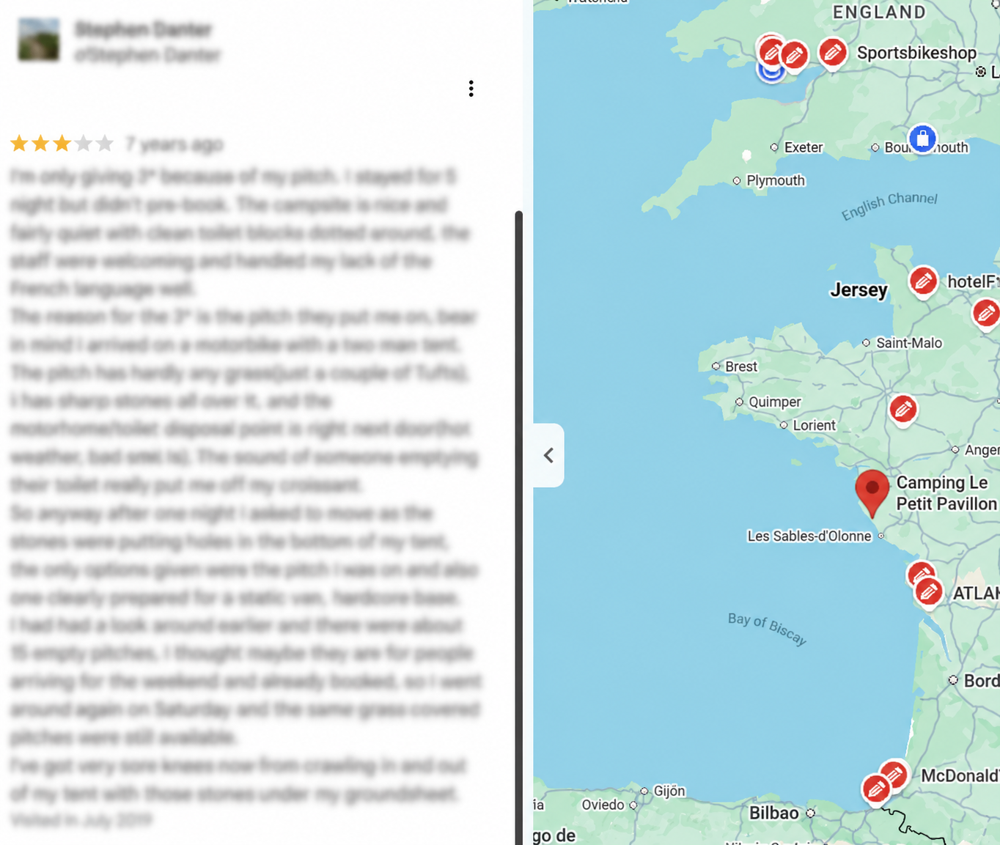

Triumph Tiger 1050 Sport

This was my first adventure-style bike. Naturally, I needed a lowered seat so that I could actually touch the ground. I think I also fitted different suspension links — or "dog bones" — at the rear, which would have lowered it even further.
It's funny, but I can't remember a great deal about the bike itself. Did it have cruise control? Maybe. I'm not 100% sure.
What I do remember is that it was very comfortable and lovely to ride.
Unfortunately, I also remember its peculiar habit of occasionally refusing to start when it was hot.
The Hot-Start Problem
If I stopped briefly during a ride to fill up with petrol, for example, the bike would sometimes behave as though the battery were completely flat. The starter would barely turn the engine, so there was no chance of getting it running again.
Leave it alone for about 30 minutes, however, and it would start perfectly.
I took it back to Bevans Triumph, where they kept it for about a month and changed various parts while trying to get to the bottom of the problem.
While I waited, they lent me a Triumph Speed Twin. That was a very nice little bike to ride, although its retro styling did have one unexpected feature.

It acted as a magnet for men of a certain age.
Wherever I stopped, someone would feel compelled to come over and tell me all about the Triumph they'd owned as a young man in the 1950s.
Apparently, all Bevans really needed to do to diagnose my Tiger was read the owners' forums. The problem was well known and involved the starter cables. Replacing them with beefier ones cured it.
After all that, the Tiger and I went to France.
One Last Tent
I was struggling to remember whether I had panniers fitted to the Tiger. If I didn't, I had no idea how I'd managed to carry everything for a camping holiday.
Then I found this photograph.

Apparently I'd simply strapped an enormous pile of luggage to the back seat and hoped for the best.
This was also my last camping holiday — to date, at least — using a tiny two-man tent.
The holiday itself was great, but by then I was in my fifties and the discomfort was becoming rather more noticeable. It didn't help that my pitch had virtually no grass, just hard-packed soil and sharp stones underneath the tent.
To make matters worse, I'd been given a pitch next to the motorhome toilet-discharge area.
Not the most pleasant smell when you're halfway through a chicken curry Pot Noodle.
Visually, there wasn't much difference either.
A Man of Principles

I asked if I could move. There were some lovely grassy pitches elsewhere on the campsite, but for whatever reason they wouldn't let me.
So, like any self-respecting grumpy holidaymaker, I posted a bad review of the campsite on Google — or somewhere similar.
The site owner found the review and contacted me. He offered me three free nights if I withdrew it.
Being a man of strong moral principles, I took it down immediately. NOT.
Still managed to get my free night though.
Time for Something Else
Eventually I part-exchanged the Tiger at Thunder Road for my Suzuki V-Strom.
Sometime afterwards I went back to Thunder Road for another look around the showroom — as you do — and there was my old Triumph.
It had been cleaned to within an inch of its life.
I think the only other time I'd ever seen it that clean was the day I collected it from Bevans.